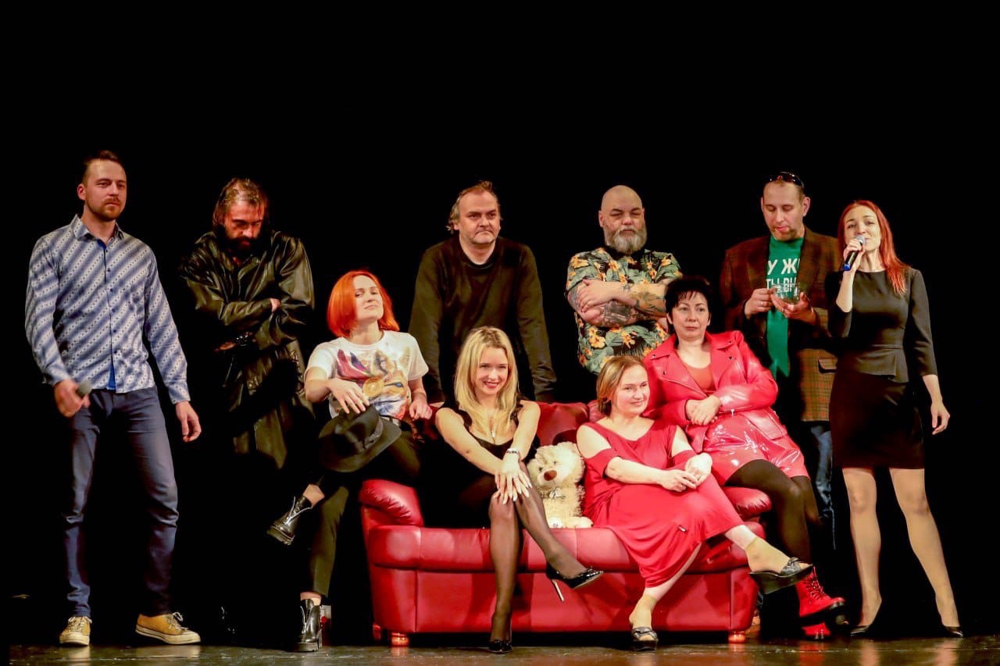
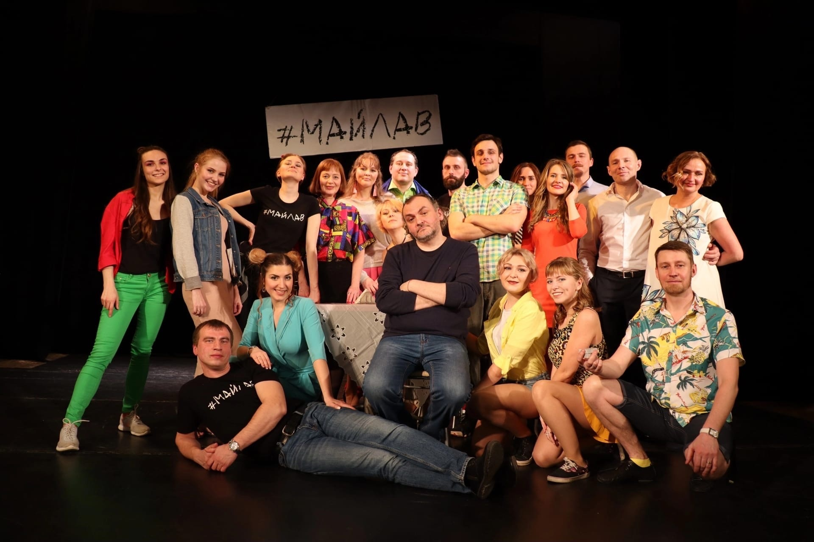

Народный театр – это почётное звание, которым мы гордимся. Сейчас – мы один из немногих Народных театров в Санкт-Петербурге, но такое звание мы носили не всегда, давайте обратимся к истории.
В 1946-ом году в нашем замечательном городе Пушкине, при Пушкинском Доме культуры, в здании бывшей Царскосельской Ратуши архитекторов И.А.Монигетти и А.Р.Баха, был создан Драматический коллектив, который через пятнадцать лет благодаря своим достижениям получил звание Театр-студия.
В 1967 году Театру-студии было присвоено звание Народный театр, которое мы с гордостью носим до сих пор и защищаем перед комиссией.
Студией и театром в разные годы руководили известные, талантливые режиссёры: Александра Толубеева, Лев Шостак, Владимир Далин, С.Чистяков, Михаил Павлов, Александр Никулин, а в наши дни - Константин Хадживатов-Эфрос.
В 1960-1980-ых годах труппа театра насчитывала до восьмидесяти человек. Над спектаклями трудились два состава, театр выпускал несколько спектаклей в год. Репертуар был крайне разнообразен: Л.Толстой «Плоды просвещения», Р.Назаров «Случайные встречи», М.Светлов «Двадцать лет спустя», М.Соболь «Товарищи романтики», А.Островский «Поздняя любовь» и «Праздничный сон до обеда», М.Горький «Враги» и «Мещане» и многое другое было сыграно на пушкинской сцене за эти годы.
В 2004 руководителем драматического театра и молодежной театральной студии стал Константин Константинович Хадживатов –Эфрос и руководит ими до сих пор. Некоторые актеры играют в труппе уже более 15 лет, а молодежная студия, существующая при театре, готовит талантливое пополнение. В работе с молодежной студией Константин Константинович стремится дать в руки начинающих актеров инструмент для овладения ими любимым занятием, научить способам и приемам, овладев которыми актер сам создает необходимый образ. Репетиционный процесс и тренинги основаны на системе Станиславского. В процесс включены разработки З. Корогодского, и М. Богина, на тренингах присутствуют элементы метода М.Чехова.
В настоящее время коллектив театра насчитывает около 25 человек всех возрастов, и еще столько же обучается в молодежной студии.